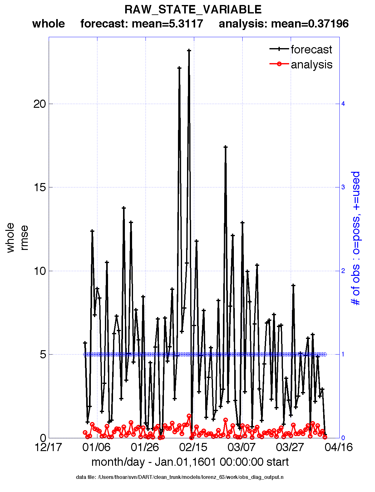

|
Jump to DART Documentation Main Index |
Main program for observation-space diagnostics for the models with 1D locations. 18 quantities are calculated for each region for each temporal bin specified by user input. The result of the code is a netCDF file that contains the 18 quantities of the prior (aka 'guess') and posterior (aka 'analysis') estimates as a function of time and region as well as all the metadata to create meaningful figures. The 1D version of obs_diag has defaults that automatically set the first and last bin center based on the first and last observation time in the set of observations being processed. This is different behavior than the 3D versions.
Each obs_seq.final file contains an observation sequence that has multiple 'copies' of the observation. One copy is the actual observation, another copy is the prior ensemble mean estimate of the observation, one is the spread of the prior ensemble estimate, one may be the prior estimate from ensemble member 1, ... etc. The only observations for the 1D models are generally the result of a 'perfect model' experiment, so there is an additional copy called the 'truth' - the noise-free expected observation given the true model state. Since this copy does not, in general, exist for the high-order models, all comparisons are made with the copy labelled 'observation'. There is also a namelist variable (use_zero_error_obs) to compare against the 'truth' instead; the observation error variance is then automatically set to zero.
Each ensemble member applies a forward observation operator to
the state to compute the "expected" value of an observation. Please
note: the forward observation operator is applied
AFTER any prior inflation has taken place!
Similarly, the forward observation operator is applied AFTER any
posterior inflation. This has always been the case. For a detailed
look at the relationship between the observation operators and
inflation, please look at the Detailed Program Execution
Flow section of filter.html.
Given multiple estimates of the observation, several quantities can
be calculated. It is possible to compute the expected observations
from the state vector before assimilating (the "guess", "forecast",
or "prior") or after the assimilation (the "analysis", or
"posterior").
Even with input.nml:filter_nml:num_output_obs_members set to 0; the full [prior,posterior] ensemble mean and [prior,posterior] ensemble spread are preserved in the obs_seq.final file. Consequently, the ensemble means and spreads are used to calculate the diagnostics. If the input.nml:filter_nml:num_output_obs_members is set to 80 (for example); the first 80 ensemble members prior and posterior "expected" values of the observation are also included. In this case, the obs_seq.final file contains enough information to calculate a rank histograms, verify forecasts, etc. The ensemble means are still used for many other calculations.
|  |
Since this program is fundamentally interested in the response as a function of region, there are three versions of this program; one for each of the oned, threed_sphere, or threed_cartesian location modules (location_mod.f90). It did not make sense to ask the lorenz_96 model what part of North America you'd like to investigate or how you would like to bin in the vertical. The low-order models write out similar netCDF files and the Matlab scripts have been updated accordingly. The oned observations have locations conceptualized as being on a unit circle, so only the namelist input variables pertaining to longitude are used.
obs_diag is designed to explore the effect of the assimilation in two ways; 1) as a function of time for a particular variable (this is the figure on the left), and sometimes 2) in terms of a rank histogram - "Where does the actual observation rank relative to the rest of the ensemble?" (figure on the right). The figures were created by Matlab® scripts that query the obs_diag_output.nc file: DART/diagnostics/matlab/plot_evolution.m and plot_rank_histogram.m. Both of these takes as input a file name and a 'quantity' to plot ('rmse','spread','totalspread', ...) and exhaustively plots the quantity (for every variable, every region) in a single matlab figure window - and creates a series of .ps files with multiple pages for each of the figures. The directory gets cluttered with them.
The observation sequence files contain only the time of the observation, nothing of the assimilation interval, etc. - so it requires user guidance to declare what sort of temporal binning for the temporal evolution plots. I do a 'bunch' of arithmetic on the namelist times to convert them to a series of temporal bin edges that are used when traversing the observation sequence. The actual algorithm is that the user input for the start date and bin width set up a sequence that ends in one of two ways ... the last time is reached or the number of bins has been reached. NOTE: for the purpose of interpretability, the 1D obs_diag routines saves 'dates' as GREGORIAN dates despite the fact these systems have no concept of a calendar.
obs_diag reads obs_seq.final files and calculates the following quantities (in no particular order) for an arbitrary number of regions and levels. obs_diag creates a netCDF file called obs_diag_output.nc. It is necessary to query the CopyMetaData variable to determine the storage order (i.e. "which copy is what?") if you want to use your own plotting routines.
| Nposs | The number of observations available to be assimilated. |
| Nused | The number of observations that were assimilated. |
| rmse | The root-mean-squared error (the horizontal wind components are also used to calculate the vector wind velocity and its RMS error). |
| bias | The simple sum of forecast - observation. The bias of the horizontal wind speed (not velocity) is also computed. |
| spread | The standard deviation of the univariate obs. DART does not exploit the bivariate nature of U,V winds and so the spread of the horizontal wind is defined as the sum of the spreads of the U and V components. |
| totalspread | The total standard deviation of the estimate. We pool the ensemble variance of the observation plus the observation error variance and take the square root. |
| NbadDARTQC | the number of observations that had a DART QC value (> 1 for a prior, > 3 for a posterior) |
| observation | the mean of the observation values |
| ens_mean | the ensemble mean of the model estimates of the observation values |
| N_trusted | the number of implicitly trusted observations, regardless of DART QC |
| N_DARTqc_0 | the number of observations that had a DART QC value of 0 |
| N_DARTqc_1 | the number of observations that had a DART QC value of 1 |
| N_DARTqc_2 | the number of observations that had a DART QC value of 2 |
| N_DARTqc_3 | the number of observations that had a DART QC value of 3 |
| N_DARTqc_4 | the number of observations that had a DART QC value of 4 |
| N_DARTqc_5 | the number of observations that had a DART QC value of 5 |
| N_DARTqc_6 | the number of observations that had a DART QC value of 6 |
| N_DARTqc_7 | the number of observations that had a DART QC value of 7 |
| N_DARTqc_8 | the number of observations that had a DART QC value of 8 |
The DART QC flag is intended to provide information about whether the observation was assimilated, evaluated only, whether the assimilation resulted in a 'good' observation, etc. DART QC values lower than 2 indicate the prior and posteriors are OK. DART QC values higher than 3 were not assimilated or evaluated. Here is the table that should explain things more fully:
| DART QC flag value | meaning |
|---|---|
| 0 | observation assimilated |
| 1 | observation evaluated only (because of namelist settings) |
|
|
|
| 2 | assimilated, but the posterior forward operator failed |
| 3 | evaluated only, but the posterior forward operator failed |
|
|
|
| 4 | prior forward operator failed |
| 5 | not used because observation type not listed in namelist |
| 6 | rejected because incoming observation QC too large |
| 7 | rejected because of a failed outlier threshold test |
| 8 | vertical conversion failed |
| 9+ | reserved for future use |
obs_diag has several improvements:
This namelist is read from the file input.nml. Namelists start with an ampersand '&' and terminate with a slash '/'. Character strings that contain a '/' must be enclosed in quotes to prevent them from prematurely terminating the namelist.
&obs_diag_nml obs_sequence_name = '' obs_sequence_list = '' bin_width_days = -1 bin_width_seconds = -1 init_skip_days = 0 init_skip_seconds = 0 max_num_bins = 9999 Nregions = 3 lonlim1 = 0.0, 0.0, 0.5 lonlim2 = 1.0, 0.5, 1.0 reg_names = 'whole', 'yin', 'yang' trusted_obs = 'null' use_zero_error_obs = .false. create_rank_histogram = .true. outliers_in_histogram = .true. verbose = .false. /
This value may be more useful:
obs_sequence_name = 'obs_seq.final'
The allowable ranges for the region boundaries are: lon [0.0, 1.0). The 1D locations are conceived as the distance around a unit sphere. An observation with a location exactly ON a region boundary cannot 'count' for both regions. The logic used to resolve this is:
if((lon ≥ lon1) .and. (lon < lon2)) keeper = .true.
Consequently, if you want to include an observation precisely AT
1.0, (for example), you need to specify something a little larger
than 1.0.
You can only specify either obs_sequence_name or obs_sequence_list -- not both. One of them has to be an
empty string ... i.e. ''.
| Item | Type | Description |
|---|---|---|
| obs_sequence_name | character(len=256), dimension(100) | An array of names of observation sequence files. These may be relative or absolute filenames. If this is set, obs_sequence_list must be set to ' ' (empty string). |
| obs_sequence_list | character(len=256) | Name of an ascii text file which contains a list of one or more observation sequence files, one per line. If this is specified, obs_sequence_name must be set to ' '. Can be created by any method, including sending the output of the 'ls' command to a file, a text editor, or another program. If this is set, obs_sequence_name must be set to ' ' (empty string). |
| bin_width_days, bin_width_seconds | integer | Specifies the width of the analysis window. All observations within a window centered at the observation time +/- bin_width_[days,seconds] is used. If both values are 0, half the separation between observation times as defined in the observation sequence file is used for the bin width (i.e. all observations used). |
| init_skip_days, init_skip_seconds | integer | Ignore all observations before this time. This allows one to skip the 'spinup' or stabilization period of an assimilation. |
| max_num_bins | integer | This provides a way to restrict the number of temporal bins. If max_num_bins is set to '10', only 10 timesteps will be output, provided there are that many. |
| Nregions | integer | The number of regions for the unit circle for which you'd like observation-space diagnostics. If 3 is not enough increase MaxRegions in obs_diag.f90 and recompile. |
| lonlim1 | real(r8) array of length(Nregions) | starting value of coordinates defining 'regions'. A value of -1 indicates the start of 'no region'. |
| lonlim2 | real(r8) array of length(Nregions) | ending value of coordinates defining 'regions'. A value of -1 indicates the end of 'no region'. |
| reg_names | character(len=6), dimension(Nregions) | Array of names for each of the regions. The default example has the unit circle as a whole and divided into two equal parts, so there are only three regions. |
| trusted_obs | character(len=32), dimension(5) | Array of names for observation TYPES that will be included in the statistics if at all possible (i.e. the forward observation operator succeeds). For 1D observations the only choices in the code as distributed are 'RAW_STATE_VARIABLE' and/or 'RAW_STATE_1D_INTEGRAL'. (Additional 1D observation types can be added by the user.) |
| use_zero_error_obs | logical | if .true., the observation copy used for the statistics calculations will be 'truth'. Only 'perfect' observations (from perfect_model_obs) have this copy. The observation error variance will be set to zero. |
| create_rank_histogram | logical | if .true. and there are actual ensemble estimates of the observations in the obs_seq.final (i.e. filter_nml:num_output_obs_members is larger than zero), a rank histogram will be created. |
| outliers_in_histogram | logical | if .true. the observations that have been rejected by the outlier threshhold mechanism will be included in the calculation of the rank histogram. |
| verbose | logical | switch controlling amount of run-time output. |
types_mod obs_sequence_mod obs_def_mod obs_kind_mod location_mod time_manager_mod utilities_mod sort_mod random_seq_mod
assim_model_mod cov_cutoff_mod model_mod null_mpi_utilities_mod
Every observation type encountered in the observation sequence file is tracked separately, and aggregated into temporal and spatial bins. There are two main efforts to this program. One is to track the temporal evolution of any of the quantities available in the netCDF file for any possible observation type:
The other is to explore the vertical profile of a particular observation kind. By default, each observation kind has a 'guess/prior' value and an 'analysis/posterior' value - which shed some insight into the innovations.
The obs_diag_output.nc output file has all the metadata I could think of, as well as separate variables for every observation type in the observation sequence file. Furthermore, there is a separate variable for the 'guess/prior' and 'analysis/posterior' estimate of the observation. To distinguish between the two, a suffix is appended to the variable name. An example seems appropriate:
...
char CopyMetaData(copy, stringlength) ;
CopyMetaData:long_name = "quantity names" ;
...
int rank_bins(rank_bins) ;
rank_bins:long_name = "rank histogram bins" ;
rank_bins:comment = "position of the observation among the sorted noisy ensemble members" ;
float RAW_STATE_VARIABLE_guess(time, copy, region) ;
RAW_STATE_VARIABLE_guess:_FillValue = -888888.f ;
RAW_STATE_VARIABLE_guess:missing_value = -888888.f ;
float RAW_STATE_VARIABLE_analy(time, copy, region) ;
RAW_STATE_VARIABLE_analy:_FillValue = -888888.f ;
RAW_STATE_VARIABLE_analy:missing_value = -888888.f ;
...
If it is possible to calculate a rank histogram, there will also be :
... int RAW_STATE_VARIABLE_guess_RankHist(time, rank_bins, region) ; ...
as well as some global attributes. The attributes reflect the namelist settings and can be used by plotting routines to provide additional annotation for the histogram.
:DART_QCs_in_histogram = 0, 1, 2, 3, 7 ;
:outliers_in_histogram = "TRUE" ;
Please note:
netCDF restricts variable names to 40 characters, so '_Rank_Hist'
may be truncated.
| Routine | Message | Comment |
|---|---|---|
| get_last_obs | No "last" observation in sequence. | Generated by an incomplete observation sequence file. |
| get_first_obs | No Observations in sequence. | Empty observation sequence file. |
none at this time
none.
N/A
DART software - Copyright UCAR. This open source software is provided by UCAR, "as is", without charge, subject to all terms of use at http://www.image.ucar.edu/DAReS/DART/DART_download
{kind=link}